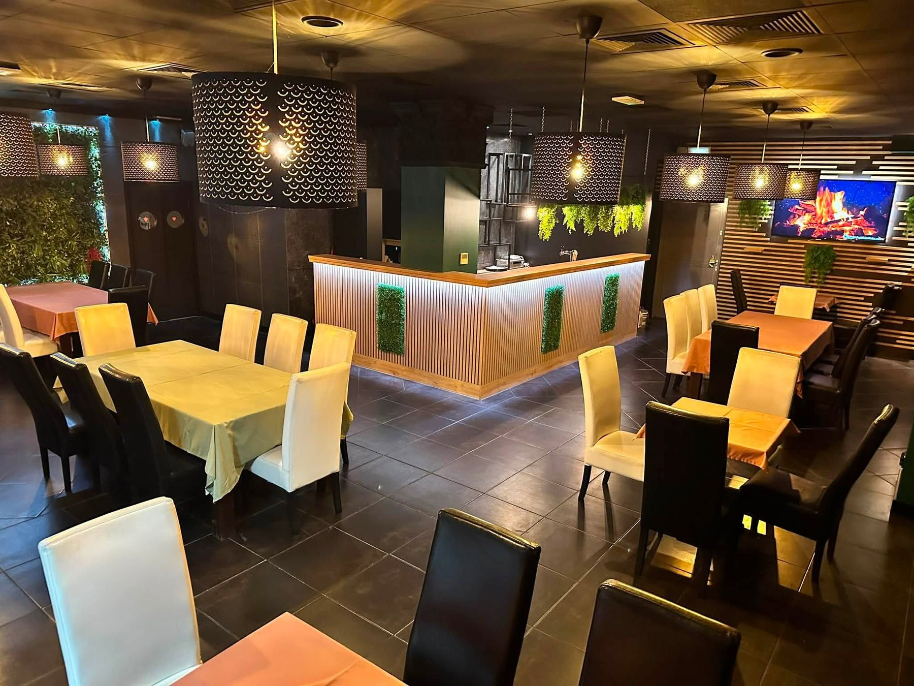
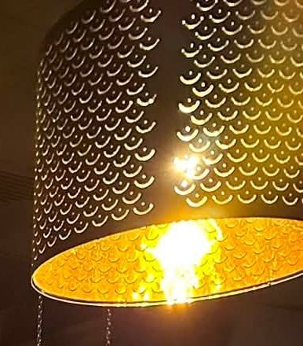
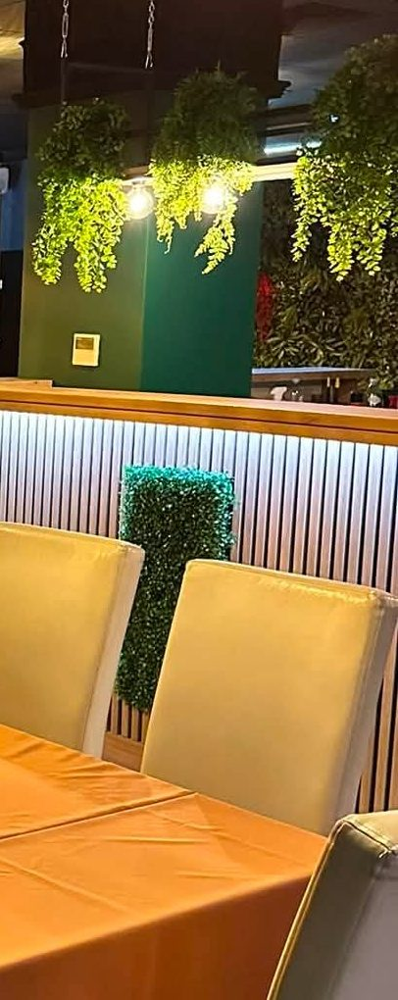
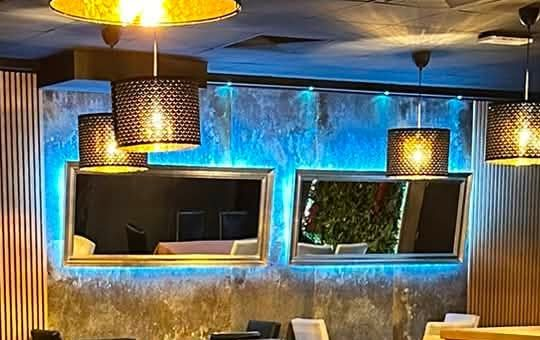
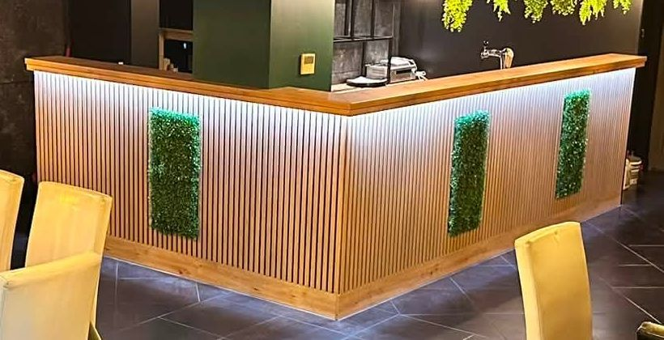
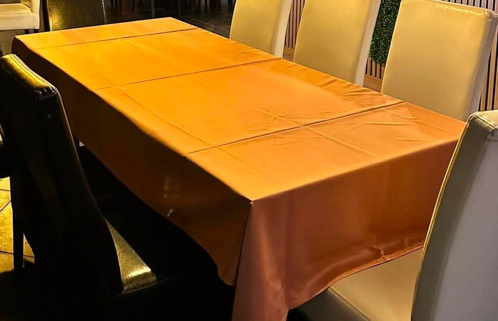

Kuchnia domowa od 2015 roku
Brama Oleśnicka
Rodzinna restauracja Iwony i Mirosława Lenartów. Rosół na mięsie, schabowy z sosem grzybowym, pierogi z gęsiną i surówki robione na miejscu.
„Niesamowicie dobre jedzenie! Ewidentnie szef kuchni ma smak i serce do dań, które serwuje.”
Diana Ż.Obiad · Google „Pierogi nawet lepsze niż w legendarnym Opolskim Pierożku.”
Mirosław N.Pierogi · Google „Organizowałam tam swoje przyjęcie po ślubie. Cała ekipa spisała się na medal. Cudowne miejsce, polecam!”
Kasia L.Przyjęcie po ślubie · Google „Schabowy petarda! Trafiliśmy przez przypadek, wróciliśmy na drugi dzień.”
Madzik K.Schabowy · Google „Schab z sosem grzybowym to rewelacja, prawdziwe borowiki, do tego pyszne kluski śląskie.”
Gosia K.Schab z borowikami · Google „Przepyszne jedzenie. Podane szybko. Zboczyliśmy z trasy w Góry Stołowe i było warto.”
LinkaObiad w trasie · Google
„Schab z sosem grzybowym to rewelacja, prawdziwe borowiki, do tego pyszne kluski śląskie.”
Gosia K.Schab z borowikami · Google „Organizowałam tam swoje przyjęcie po ślubie. Cała ekipa spisała się na medal. Cudowne miejsce, polecam!”
Kasia L.Przyjęcie po ślubie · Google „Przepyszne jedzenie. Podane szybko. Zboczyliśmy z trasy w Góry Stołowe i było warto.”
LinkaObiad w trasie · Google „Pierogi nawet lepsze niż w legendarnym Opolskim Pierożku.”
Mirosław N.Pierogi · Google „Schabowy petarda! Trafiliśmy przez przypadek, wróciliśmy na drugi dzień.”
Madzik K.Schabowy · Google „Niesamowicie dobre jedzenie! Ewidentnie szef kuchni ma smak i serce do dań, które serwuje.”
Diana Ż.Obiad · Google
Brama Smaków, oferta sezonowa
Święta z naszej kuchni
Uszka, pierogi, krokiety, pasztet i gołąbki na wigilijny stół. Zamówienie złożysz telefonicznie albo na Facebooku.
W ciągu roku przygotowujemy też menu na Walentynki, Wielkanoc i inne okazje. Ogłaszamy je na Facebooku.
Świąteczna oferta garmażeryjna
- Uszka z kapustą i grzybami2,50 / szt.
- Pierogi z kapustą i grzybami4,50 / szt.
- Pierogi ruskie4,00 / szt.
- Krokiet z pieczarkami i serem10,00 / szt.
- Krokiet z kapustą i grzybami12,00 / szt.
- Pasztet staropolski70 / kg
- Gołąbki60 / kg
Na specjalne okazje
Gotujemy też poza zwykłym obiadem
Uroczystość w Bramie
Komunie, urodziny, przyjęcia po ślubie, stypy i wigilie firmowe. Menu i salę ustalamy razem z Tobą.
Zobacz, jak organizujemy przyjęcia Brama SmakówCatering i garmażerka
Obiady dla przedszkoli, dania gotowe na wynos i zamówienia świąteczne z naszej kuchni.
Zobacz ofertę cateringuO nas
Dziesięć lat przy Lwowskiej
Iwona Lenart od dziecka chciała mieć własną restaurację. Z mężem Mirosławem prowadziła wcześniej pizzerię, a w 2015 roku przejęła Bramę Oleśnicką.
Dziś prowadzą ją razem z córką i zespołem. Gotujemy to, co sami jemy w domu. Przyjeżdżają do nas rodziny na niedzielny obiad, ludzie z pracy w tygodniu i podróżni z trasy S8.
Iwona Lenart

Galeria
Zajrzyj do środka
Sala wieczorem 
Lampy nad stołami 
Zieleń przy barze 
Lustra w niebieskim świetle 
Bar 
Stół na przyjęcie


Gdzie jest wejście do restauracji?
Lwowska 31 w Oleśnicy, parter budynku Oleśnickiego Centrum Biznesu Feniks. Wejście jest z tyłu budynku, od ulicy go nie widać. Jeśli się zgubisz, zadzwoń: 798 101 270.
Czy trzeba rezerwować stolik?
W tygodniu zwykle nie. W niedzielę po południu sala bywa pełna, więc warto zadzwonić wcześniej albo wysłać rezerwację przez formularz.
Czy zupa jest w cenie obiadu?
Tak, do dań mięsnych z karty podajemy zupę gratis. Zupę dnia można też zamówić osobno za 16 zł.
Czy można przyjść z dziećmi?
Tak. Mamy kącik zabaw i sztućce dla dzieci.
Czy w menu są oznaczone alergeny?
Tak, cyfry przy nazwach dań w karcie oznaczają alergeny. Jeśli masz alergię, powiedz o niej przy zamówieniu.
Czy mogę zamówić obiad na wynos?
Tak. Zamów przez telefon i odbierz w restauracji.
Czy można płacić kartą?
[DO UZUPEŁNIENIA]
Gdzie zaparkować?
[DO UZUPEŁNIENIA]
Czy można przyjść z psem?
[DO POTWIERDZENIA: w opiniach goście piszą, że tak]
Dojazd
Lwowska 31, Oleśnica
Restauracja jest na parterze budynku Feniks, od tyłu. Od ulicy jej nie widać, więc za pierwszym razem:
- Zatrzymaj się przy Lwowskiej 31 (budynek Oleśnickiego Centrum Biznesu Feniks).
- Obejdź budynek. Wejście do Bramy jest z tyłu.
- [DO UZUPEŁNIENIA: znak rozpoznawczy wejścia i parking]
Godziny otwarcia
[DO UZUPEŁNIENIA: godziny pon.–niedz.] [DO UZUPEŁNIENIA: płatność kartą?]